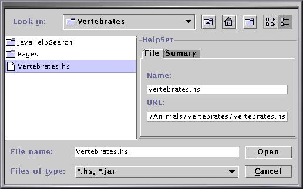

There are three sample helpsets you can merge into the Animals helpset:
There are three sample helpsets you can merge into the Animals helpset:
Choose HelpSet > Add to add a helpset to the master HelpSet.

The FileChooser shows both .hs files and .jar files (in case an .hs file is stored inside a .jar file).
There are three sample helpsets you can merge into the Animals helpset: